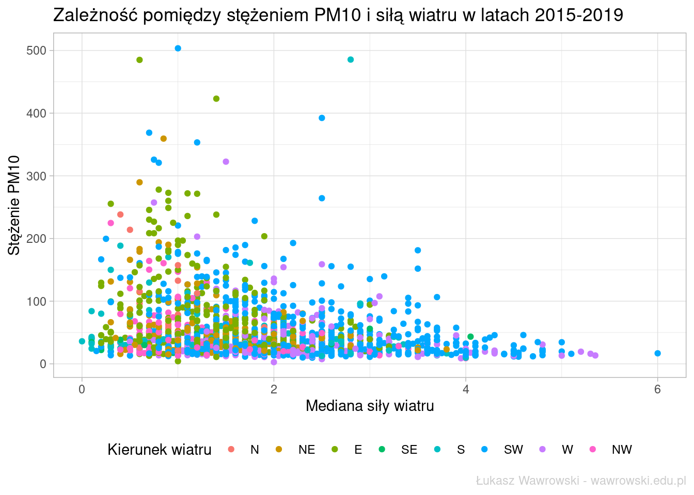

library(tidyverse)
library(lubridate)
wczytaj_pliki <- function(nazwa){
d <- read_csv2(str_c("wiatr/",nazwa), col_names = F) %>%
filter(X1==249180010) # stacja w Pszczynie
return(d)
}
# kierunek wiatru
pliki_wiatr_kierunek <- str_c(sort(rep(str_c("B00202A_",2015:2019),12)),
"_",sprintf("%02d",1:12),".csv")
wiatr_kierunek <- map_df(pliki_wiatr_kierunek, wczytaj_pliki)
wiatr_kierunek <- wiatr_kierunek %>%
select(data_time=X3, kierunek=X4) %>%
mutate(data=as_date(data_time),
kierunek8=cut(x=kierunek, breaks = seq(from = 0, to = 360, by = 22.5),
labels = c("N", "NE", "NE", "E", "E", "SE", "SE", "S",
"S", "SW", "SW", "W", "W", "NW", "NW", "N")))
# siła wiatru
pliki_wiatr_sila <- str_c(sort(rep(str_c("B00702A_",2015:2019),12)),
"_",sprintf("%02d",1:12),".csv")
wiatr_sila <- map_df(pliki_wiatr_sila, wczytaj_pliki)
wiatr_sila <- wiatr_sila %>%
select(data_time=X3, sila=X4)
wiatr_kierunek_sila <- inner_join(wiatr_kierunek, wiatr_sila, by = "data_time")Istotnym czynnikiem mającym wpływ na jakość powietrza jest także siła i kierunek wiatru. Instytut Meteorologii i Gospodarki Wodnej gromadzi takie dane w odstępach 10 minutowych i można je pobrać z tej strony dla wszystkich stacji. Dane archiwalne są w plikach .zip dla każdego miesiąca osobno. Pobrałem ręcznie 60 plików i je rozpakowałem, a następnie wczytałem je do R za pomocą poniższego skryptu.
Wynikowy zbiór danych zawiera 257484 obserwacji i 5 kolumn. Kierunek wiatru jest określany na planie koła w zakresie o 0° do 360°. Dobrze to obrazuje poniższy obrazek.
Na potrzeby analizy podzieliłem koło na 8 części po 45°, aby wyodrębnić najważniejsze kierunki wiatru.
wiatr_kierunek_sila %>%
count(kierunek8) %>%
mutate(kierunek8=fct_reorder(kierunek8, n)) %>%
ggplot(aes(x=kierunek8, y=n)) +
geom_col(fill = "#6daaee") +
coord_flip() +
ylim(0,80000) +
xlab("Kierunek wiatru") +
ylab("Liczba pomiarów") +
ggtitle("Liczba pomiarów kierunku wiatru - dane 10-minutowe") +
labs(caption = "Łukasz Wawrowski - wawrowski.edu.pl") +
theme_light() +
theme(plot.caption = element_text(color = "grey80"))W Pszczynie wiatr najczęściej wieje z południowego-zachodu (SW). Na drugim i trzecim miejscu z podobnym rezultatem jest wiatr zachodni (W) i wschodni (E). Najrzadziej doświadczany jest wiatr północny.
Na potrzeby analizy smogu dane dotyczące wiatru musiały zostać zagregowane do danych dziennych. W tym celu obliczyłem liczbę pomiarów kierunku wiatru każdego dnia i dla każdego dnia wybrałem ten dominujący. Jeśli jakiegoś dnia dwa kierunki występowały tyle samo razy to wybierałem ten, który wiał silniej w odniesieniu do mediany.
wiatr_kierunek_sila_dzien <- wiatr_kierunek_sila %>%
group_by(data,kierunek8) %>%
summarise(n=n(),
sila_med=median(sila)) %>%
group_by(data) %>%
top_n(1,n) %>%
top_n(1,sila_med) %>%
ungroup()`summarise()` has grouped output by 'data'. You can override using the
`.groups` argument.Rezultatem jest zbiór zawierający 1815 obserwacji. Sprawdźmy czy zmienił się rozkład występowania kierunku wiatru.
wiatr_kierunek_sila_dzien %>%
count(kierunek8) %>%
mutate(kierunek8=fct_reorder(kierunek8, n)) %>%
ggplot(aes(x=kierunek8, y=n)) +
geom_col(fill = "#6daaee") +
coord_flip() +
xlab("Kierunek wiatru") +
ylab("Liczba pomiarów") +
ggtitle("Liczba pomiarów kierunku wiatru - dane dzienne") +
labs(caption = "Łukasz Wawrowski - wawrowski.edu.pl") +
theme_light() +
theme(plot.caption = element_text(color = "grey80"))Nadal dominuje wiatr południowo-zachodni, natomiast nastąpiła zamiana na drugim i trzecim miejscu - wiatru zachodniego ze wschodnim. Także na ostatnich dwóch pozycjach kategorie są odwrotnie w porównaniu do pomiarów co 10 minut.
Zobaczmy jak analizowane zjawisko kształtowało się w czasie.
ggplot(wiatr_kierunek_sila_dzien, aes(x=data, y=sila_med, color=kierunek8)) +
geom_point() +
scale_color_discrete(name = "Kierunek wiatru") +
xlab("Data") +
ylab("Mediana siły wiatru (w m/s)") +
ggtitle("Siła i kierunek wiatru w latach 2015-2019") +
labs(caption = "Łukasz Wawrowski - wawrowski.edu.pl") +
theme_light() +
theme(legend.position = "bottom",
plot.caption = element_text(color = "grey80")) +
guides(col = guide_legend(nrow = 1))Można zauważyć, że zimą wiatr wieje silniej niż w pozostałej części roku. Wśród wysokich wartości dominuje kierunek południowo-zachodni i zachodni.
W następnej kolejności zestawimy te dane ze stężeniem pyłów PM10.
pm10_wiatr <- inner_join(pm10_pszczyna, wiatr_kierunek_sila_dzien, by="data") %>%
filter(!is.na(pm10))
ggplot(pm10_wiatr, aes(x=sila_med, y=pm10, color=kierunek8)) +
geom_point() +
scale_color_discrete(name = "Kierunek wiatru") +
xlab("Mediana siły wiatru") +
ylab("Stężenie PM10") +
ggtitle("Zależność pomiędzy stężeniem PM10 i siłą wiatru w latach 2015-2019")+
labs(caption = "Łukasz Wawrowski - wawrowski.edu.pl") +
theme_light() +
theme(legend.position = "bottom",
plot.caption = element_text(color = "grey80")) +
guides(col = guide_legend(nrow = 1))
Na wykresie nie jest widoczna silna współzależność. Współczynnik korelacji liniowej pomiędzy tymi zmiennymi wynosi \(r=-0,22\), co oznacza, że pomiędzy siłą wiatru a stężeniem PM10 występuje słaba ujemna zależność. Także w przypadku kierunku wiatru nie można zidentyfikować wzorca zależności. Wysokie stężenie PM10 występuję dla wiatru z kierunku południowo-zachodniego (SW), wschodniego (E), a także północno-wschodniego (NE).
W kolejnym kroku zestawimy indeks jakości powietrza z kierunkiem wiatru.
table(pm10_wiatr$indeks, pm10_wiatr$kierunek8) %>% knitr::kable()| N | NE | E | SE | S | SW | W | NW | |
|---|---|---|---|---|---|---|---|---|
| bardzo dobry | 1 | 9 | 11 | 1 | 11 | 133 | 90 | 28 |
| dobry | 5 | 96 | 187 | 14 | 74 | 336 | 149 | 76 |
| umiarkowany | 7 | 28 | 72 | 1 | 14 | 89 | 22 | 27 |
| dostateczny | 4 | 12 | 38 | 1 | 4 | 62 | 9 | 9 |
| zły | 3 | 5 | 27 | 0 | 3 | 30 | 4 | 3 |
| bardzo zły | 3 | 8 | 30 | 0 | 4 | 30 | 5 | 4 |
Najwięcej dni ze złym i bardzo złym indeksem powietrza występowało razem z wiatrem wschodnim (E) i południwo-zachodnim (SW), co jest związane z faktem, że wiatr z tych kierunków najczęściej występował w Pszczynie. Powyższe dane zestawimy także w postaci względnej.
round_preserve_sum <- function(x, digits = 0) {
up <- 10 ^ digits
x <- x * up
y <- floor(x)
indices <- tail(order(x-y), round(sum(x)) - sum(y))
y[indices] <- y[indices] + 1
y / up
}
pm10_wiatr %>%
count(indeks, kierunek8) %>%
group_by(indeks) %>%
mutate(proc=round_preserve_sum(n/sum(n)*100),
proc_label=ifelse(proc > 0, proc, NA)) %>%
ggplot(aes(x=indeks, y=proc, fill=kierunek8)) +
geom_col() +
geom_text(aes(label = proc_label), position = position_stack(0.5)) +
scale_fill_discrete(name = "Kierunek wiatru") +
xlab("Indeks jakości powietrza") +
ylab("Odsetek dni (w %)") +
coord_flip() +
ggtitle("Udział kierunku wiatru w ramach indeksu powietrza") +
labs(caption = "Łukasz Wawrowski - wawrowski.edu.pl") +
theme_light() +
theme(legend.position = "bottom",
plot.caption = element_text(color = "grey80")) +
guides(fill = guide_legend(nrow = 1))
Na rysunku można zauważyć, że bez względu na indeks jakości powietrza największy odsetek stanowi wiatr wiejący z południowego-zachodu (SW), a na drugim miejscu jest wiatr wschodni (E). Jedynie w przypadku bardzo dobrego poziomu jakości powietrza na drugim miejscu znajduje się wiatr zachodni (W).
Niniejsza analiza nie pozwala w sposób jednoznaczny powiązać jakości powietrza z kierunkiem wiatru. Być może analiza bardziej szczegółowych danych na temat pyłów pozwoliłaby lepiej zbadać ten wpływ.